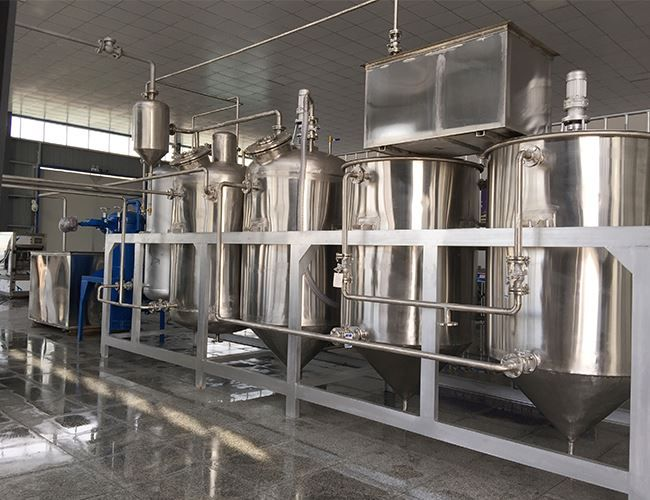
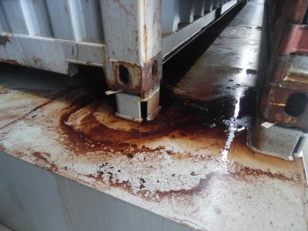
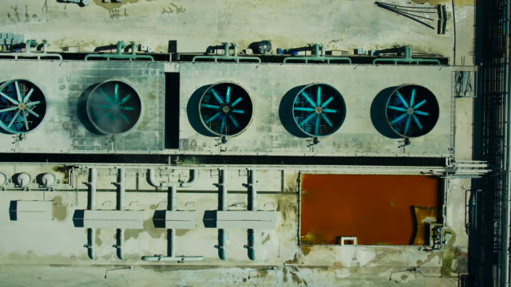

<!DOCTYPE html>
<html lang="en"></html>
    <head>
        <meta name="meeting-minutes" content="meeting recap 10/07/2022">
        <meta charset="utf-8" />
        <title>INTERNAL Proj29 &lt;CLEARANCE: CONFIDENTIAL&gt; Meeting Minutes @10/07/2022</title>
        <link rel="icon" type="image/x-icon" href="resources/lock_icon.png">
    </head>
    <body>
        <header>
            <h1><em>INTERNAL</em> 10/07/2022 Meeting Minutes</h1>
            <h3>The following information has been deemed <em>priviledged</em> by <em>TPOWELL Industries Inc.</em> and shall not, under any circumstance, be distributed elsewhere without the express permission of <b class="CLWSEC_I1Clearance">Senior Admin Powell</b></h3>
            <nav>
                <ol>
                    <li><a href="#">Opening Thoughts: Recap of activities and developments since last meeting</a></li>
                    <li><a href="#">Developments on the <i><span class="redacted">&lt;REDACTED&gt;</span></i> disaster situation</a></li>
                    <li><a href="#">Closing thoughts</a></li>
                </ol>
            </nav>
        </header>
        <main>
            <div id="agenda-main">
                <section>
                    <h2>Opening Thoughts: Recap of activities and developments since last meeting</h2>
                    <p>On-prem staffing continues to be strained with the situation on the ground worsening. L4 and L5 management will be demanding substantial positive developments within </i></span>&lt;REDACTED&gt;</span></i> or heads will roll. Stay vigilant and stay behind the yellow tape.</p>
                </section>
                <section>
                    <h2>Developments on the <i><span class="redacted"></span>&lt;REDACTED&gt;</span></i> disaster situation</h2>
                    <p>The temporal degradation tests are at a standstill while spillage leaks through sectors B34 with a torrential downpour gliding east toward </i><span class="redacted"></span>&lt;REDACTED&gt;</span></i>. Casualty figures remain a mystery and currently suggest upwards of 137 in critical condition. The true effects of the contagion remain a mystery as are its transmission mechanisms.</p>
                    
                    
                    
                </section>
                <section>
                    <h2>Closing thoughts</h2>
                    <p>Remain at your posts and keep identification/supporting documentation at the ready. Communication from above remains sparse but clear. The facts do not leave this room - fire upon unidentified personell <strong>on sight</strong>.</p>
                </section>
            <hr>
            <div id="agenda-addendum">
                <section>
                    <h2>Addendums/Notes</h2>
                    <ul>
                        <li><i><span class="redacted"></span>&lt;REDACTED&gt;</span></i></li>
                        <li><i><span class="redacted"></span>&lt;REDACTED&gt;</span></i></li>
                        <li><strong>EFFECTIVE IMMEDIATELY</strong> Communications to be redirected through <b class="NTISEC_I6Clearance">Anamalous Materials Unit R1</b></li>
                        <li><i><span class="redacted"></span>&lt;REDACTED&gt;</span></i></li>
                        <li><audio controls loop src="resources/cutter.mp3">ABORT Signal</audio></li>
                        <li><i><span class="redacted"></span>&lt;REDACTED&gt;</span></i></li>
                        <li><video controls src="resources/CPT_4.mp4">CPT4_Anomalous</video></li>
                    </ul>
                </section>
            </div>
        </main>
        <hr>
        <footer>
            <div class="recantation">
                It has to start somewhere_<br>
                It has to start sometime_<br>
                What better place than here_<br>
                What better time than now_<br>
            </div>
        </footer>
    </body>
</html>